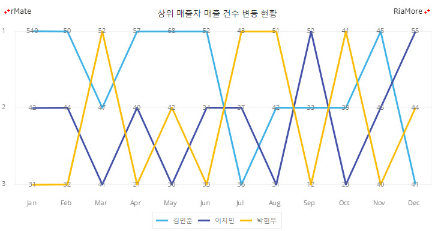
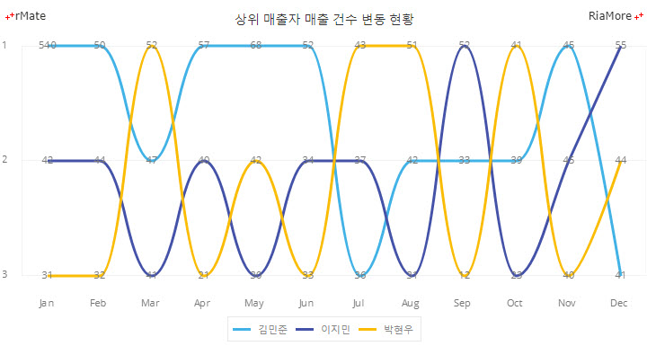
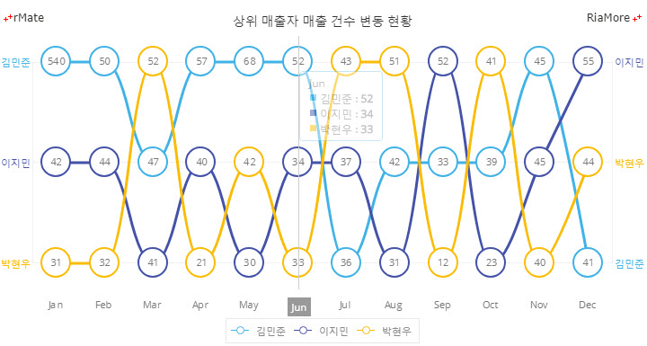

범프 차트
범프 차트는 차트에 표현되는 요소(카테고리)들의 값의 크기 보다는 시간에 따른 성과순위의 변화를 파악하는데 도움을 주는 차트입니다.
순위를 나타내는 축은 차트의 좌측에 세로 축(Y 축)으로 표시되고, 시간은 차트의 하단에 가로 축(X 축)으로 표시됩니다.
범프 차트는 <Bump2DChart> 노드의 series 속성값에 <Bump2DSeries> 노드를 설정하여 생성할 수 있습니다.
다음은 범프 차트를 생성하는 코드와 이를 적용해서 출력한 차트의 예제입니다. 이 예제에서는 월별로 변동되는 매출 건수를 직선으로 연결하여 표현합니다.
<Bump2DChart showDataTips="true" dataTipDisplayMode="axis">
...
<series>
<Bump2DSeries id="bump1" yField="김민준" displayName="김민준" labelPosition="inside" form="segment">
...
</Bump2DSeries>
<Bump2DSeries id="bump2" yField="이지민" displayName="이지민" labelPosition="inside" form="segment">
...
</Bump2DSeries>
<Bump2DSeries id="bump3" yField="박현우" displayName="박현우" labelPosition="inside" form="segment">
...
</Bump2DSeries>
</series>
</Bump2DChart>

See the CodePen 알메이트 차트 - 범프 차트
혹(범프, Bump)을 연결하는 선을 곡선으로 표현할 수 있습니다. 다음 예제에서는 월별로 변동되는 매출 건수를 곡선으로 연결하여 표현합니다.
<Bump2DChart showDataTips="true" dataTipDisplayMode="axis">
...
<series>
<Bump2DSeries id="bump1" yField="김민준" displayName="김민준" labelPosition="inside" form="curve">
...
</Bump2DSeries>
<Bump2DSeries id="bump2" yField="이지민" displayName="이지민" labelPosition="inside" form="curve">
...
</Bump2DSeries>
<Bump2DSeries id="bump3" yField="박현우" displayName="박현우" labelPosition="inside" form="curve">
...
</Bump2DSeries>
</series>
</Bump2DChart>

See the CodePen 알메이트 차트 - 범프 차트 (곡선)
혹(범프, Bump)에 도형 표시
범프 차트에서 <Bump2DSeries> 노드의 itemRenderer 속성(기본값: “none”)을 설정하여 데이터 포인트에 특정한 모양의 도형을 표시할 수 있습니다.
itemRenderer 속성에 설정 가능한 값과 표시되는 도형의 모양은 다음과 같습니다.
- CircleItemRenderer: 데이터 포인트에 원을 표시합니다.
- TriangleItemRenderer: 데이터 포인트에 삼각형을 표시합니다.
- RectangleItemRenderer: 데이터 포인트에 사각형을 표시합니다.
- DiamondItemRenderer: 데이터 포인트에 다이아몬드를 표시합니다.
- CrossItemRenderer: 데이터 포인트에 십자형을 표시합니다.
- XShapeItemRenderer: 데이터 포인트에 X자 모양을 표시합니다.
- IShapeItemRenderer: 데이터 포인트에 I자 모양을 표시합니다.
다음 예제 차트에서는 혹(범프, Bump)에 원을 표시하는 데이터 렌더러가 적용되었습니다.
<Bump2DChart showDataTips="true" dataTipDisplayMode="axis">
...
<series>
<Bump2DSeries id="bump1" yField="김민준" displayName="김민준" labelPosition="inside" itemRenderer="CircleItemRenderer" form="curve">
...
</Bump2DSeries>
<Bump2DSeries id="bump2" yField="이지민" displayName="이지민" labelPosition="inside" itemRenderer="CircleItemRenderer" form="curve">
...
</Bump2DSeries>
<Bump2DSeries id="bump3" yField="박현우" displayName="박현우" labelPosition="inside" itemRenderer="CircleItemRenderer" form="curve">
...
</Bump2DSeries>
</series>
</Bump2DChart>

See the CodePen 알메이트 차트 - 범프 차트 (범프에 원 표시)